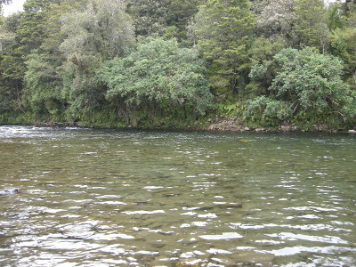
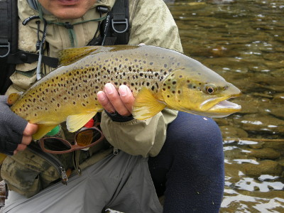

釣行日誌 ＮＺ編 「翡翠、黄金、そして銀塊」
長い荒瀬にて
2010/11/30(TUE)-3
今日の２尾目を釣り上げ、気を良くして上流を覗うと、木立が覆いかぶさった長い荒瀬の流れ込みが見えた。魅力的な暗緑色の深みが続いている。対岸は切り立った急斜面なので、このまま右岸側からアプローチすることに決めた。

はやる気持ちを抑え、いきなり核心部分に迫ることを自重し、１番下流から丁寧にブラインドで釣り上がることにして流れに歩み込む。１番深い流心、その脇50cmと1mという３本の筋を想定し、それぞれに3mずつフライを流しつつ上流へ移動して行く。立ち込んだ水深は腰のあたりまである。
集中と緊張、静かな興奮の中、荒瀬のおおよそ半分まで釣り上がり、黄色の大石が沈んでいるところへキャストする。上下にバウンドする流れにフライが浮かんだ、と思ったらいきなり黒い鼻先がウルフをくわえて沈んだ。
『あっ！』
と驚き思わず早合わせをしてしまい、フライがすっぽ抜けてきた。
「あちゃ～っ！」
身をかがめて悔しがると、一部始終を背後から見ていたブリントさんが笑う。いかんいかんと気を取り直し、魚の口にフックが触れた感触は無かったので、今の１尾はまだ釣れるかも？と考えてフライを結び直す。ドライフライとインジケーター兼用で、よく目立つ10番のイエローハンピーをまず結び、フックのベンドにティペットを1mほど付けてから、あの必殺の小型ニンフをしつらえた。NZ式ドロッパーシステムである。着水直後のドライに出たのだから、そんなに深いところには居ないだろうと見当を付けて、ニンフまでのティペットは短めにしておいた。
ニンフが沈むのに必要な距離を見込んで、魚がさっき出た位置よりも少し上流を狙う。小型ニンフの重さでフォルスキャストが少しカックンカックンするが、なんとか２つのフライを思った場所に投射した。ハンピーがバウンスしながら流下してくる。が、何も反応は無い。
『こりゃ、さっきの合わせ失敗で脅かしちゃったかな......』
などと疑心暗鬼になりつつも、二度、三度のキャスト。四度目のキャストで流れ始めたイエローハンピーが急に見えなくなった。
「来たっ！」
すかさず合わせると、嬉しい重量感がずっしりとロッドに載り、本流に刺さったフライラインが下流へと突進し、フッと軽くなった。
「あぁ～っ！ バレたぁっ！」
力無く垂れ下がったラインを巻き取りながら振り返ると、ブリントさんが穏やかに微笑しながら肩をすくめて見せた。う～ん、狙いはピッタシだったがなぁ....とがっくり来たが、まだ良いポイントは長く続いている。再び挑戦だ。
５歩ほど上流へ進み、仮想した３本の筋を狙ってまたドロッパーシステムを流してゆく。キャスト、ドリフト、ピックアップ、再びキャスト.....の繰り返し。どこで出てもおかしくない絶好の流れが続くので気を緩めることはできない。3m流し、５歩上流へ進み、再び流す。忍耐力の要求されるブラインドの釣り方である。
さっきバラした場所から10mほど上がると、流れ込みからの流勢が激しくなってきた。水深も深い。上下に揺られつつ流下してきたハンピーに、またしても黒い鼻先が飛び出した。
『落ち着け！』
自分に言い聞かせ、ゆっくりタイミングを取ってストライク！ よし、今度はしっかりフッキングした。ロッドに伝わる重量感が、いったん上流側にダッシュし、すぐさま反転して下流へと疾駆してゆく。余分なラインを巻き取るまでもなくすぐにリールから引き出され、ドラグが効き始める。遙か下流まで流れはフラットなので、最初の疾走をこらえてしまえばあとはロッドさばきとドラグのやりとりで対応できる。慌てて鱒と一緒に走り出す必要は無かった。しかし、ブリントさんの待つ右岸側の浅瀬に誘導しようと試みるが、なかなか鱒は弱みを見せず、川の真ん中に立ち込んでいる僕の回りを一周するかたちで再び本流に逃げ込んだ。朝のうちのような場所で釣ったいたら、あっという間に流木でおジャン！ になっていただろう。
それでもようやく魚は弱ってきて、岸辺まで引っ張って来ることができた。ブリントさんが手渡してくれたネットで慎重にすくい上げると、茶褐色というよりは黄金色に見える魚体が黒い網目の中に収まった。少々小振りだが、よくファイトした３尾目であった。

釣行日誌ＮＺ編 目次へ
サイトマップ
ホームへ
お問い合わせ